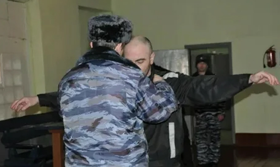
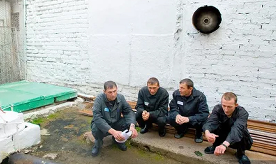

Освобождение от наказания в связи с изменением обстановки
Освобождение от наказания в связи с изменением обстановки (ст. 80.1. УК РФ) распространяется на лиц, впервые совершивших преступление небольшой или средней тяжести, если судом установлено, что вследствие изменения обстановки это лицо или совершенное им преступление перестали быть общественно опасными. Утрата общественной опасности при этом носит фактический характер, деяние остается запрещенным уголовным законом, а лицо остается подлежащим уголовной ответственности, но назначение уголовного наказания в силу изменения обстановки становится нецелесообразным.
Утрата общественной опасности может быть связана с существенными социально-экономическими изменениями (например, наказуемая по уголовному законодательству СССР спекуляция перестала считаться общественно опасной после перехода к капиталистическим отношениям), с изменениями в поведении самого лица (например, лицо, уклонявшееся от прохождения военной службы, добровольно явилось на призывной пункт), с изменениями в его здоровье, материальном положении и т.п. (например, в период совершения преступления лицо было физически здорово, а затем перенесло тяжелую травму, которая приковала его к постели).
Указание на изменение обстановки может содержаться в самом статье УК РФ: так, примечанием 1 к ст. 134 УК РФ установлено освобождение лица, впервые совершившего половое сношение с лицом в возрасте от 14 до 16 лет, не достигшим половой зрелости, от наказания, если будет установлено, что это лицо и совершенное им преступление перестали быть общественно опасными в связи со вступлением в брак с потерпевшей (потерпевшим).
Данный вид освобождения от наказания является безусловным и окончательным. Решение об освобождении от наказания принимается судом, при этом осужденному выносится обвинительный приговор, однако наказание не назначается.
Освобождение от наказания в связи с болезнью
Освобождение от наказания в связи с болезнью (ст. 81 УК РФ) распространяется на лиц, у которых после совершения преступления развилась тяжелая болезнь, не позволяющая исполнить уголовное наказание.
Данное основание распространяется как на лиц, которые еще не осуждены, так и на лиц, которые уже отбывают наказание (в таком случае они освобождаются от дальнейшего его отбывания).
Законом предусмотрено два порядка освобождения от наказания в связи с болезнью, в зависимости от типа заболевания:
а) у лица наступило психическое расстройство, лишающее возможности осознавать фактический характер и общественную опасность своих действий (бездействия) либо руководить ими. В таком случае суд обязан освободить лицо от отбывания наказания и, в зависимости от характера совершенного преступления и личности осужденного, может назначить ему принудительные меры медицинского характера;
б) у лица развилась иная (физическая) тяжелая болезнь, препятствующая отбыванию наказания (туберкулез, злокачественные новообразования, болезни эндокринной системы, органов кровообращения, дыхания, пищеварения и др.). В таком случае суд может освободить лицо от отбывания наказания.
Данный вид освобождения от наказания не является окончательным: при выздоровлении указанных лиц они могут подлежать уголовной ответственности и наказанию, если не истекли сроки давности.
Отсрочка отбывания наказания
Отсрочка отбывания наказания (ст. 82 УК РФ), в отличие от освобождения от уголовного наказания, подразумевает лишь приостановление начала исполнения уголовного наказания по гуманным соображениям.
Данная мера может быть применена к следующим категориям осужденных:
а) беременным женщинам;
б) женщинам, имеющим ребенка в возрасте до четырнадцати лет;
в) мужчинам, имеющим ребенка в возрасте до четырнадцати лет и являющимся единственным родителем.
Отсрочка не применяется к лицам, которым назначено наказание в виде ограничения свободы, лишения свободы за преступления против половой неприкосновенности несовершеннолетних, не достигших четырнадцатилетнего возраста, лишения свободы на срок свыше пяти лет за тяжкие и особо тяжкие преступления против личности, лишения свободы за терроризм.
Отсрочка реального отбывания наказания может быть предоставлена до достижения ребенком четырнадцатилетнего возраста. В случае наступления беременности в период отбывания наказания в виде обязательных работ, исправительных работ, ограничения свободы осужденная женщина вправе обратиться в суд с ходатайством об отсрочке ей отбывания наказания со дня предоставления отпуска по беременности и родам.
Данная мера направлена на соблюдение интересов малолетних детей, поэтому отсрочка будет отменена, если осужденный отказался от ребенка или продолжает уклоняться от обязанностей по воспитанию ребенка после предупреждения, объявленного органом, осуществляющим контроль за поведением осужденного (уголовно-исполнительной инспекции). Представляется, что отсрочка также должна быть отменена, если отпали условия, при которых она была предоставлена (прерывание беременности, смерть ребенка и т.д.).
По достижении ребенком четырнадцатилетнего возраста суд освобождает осужденного от отбывания наказания или оставшейся части наказания со снятием судимости либо заменяет оставшуюся часть наказания более мягким видом наказания.
Вопрос об отсрочке исполнения приговора решается судом по ходатайству осужденного, его законного представителя, близких родственников, защитника либо по представлению прокурора.
Отсрочка отбывания наказания больным наркоманией
Отсрочка отбывания наказания больным наркоманией (ст. 82.1. УК РФ) может быть применена судом к осужденному, которому впервые назначено наказание в виде лишения свободы за незаконные приобретение, хранение, перевозку, изготовление, переработку наркотических средств, психотропных веществ или их аналогов (ст. 228 УК РФ), признанному больным наркоманией и изъявившему желание добровольно пройти курс лечения от наркомании, а также медицинскую реабилитацию, социальную реабилитацию.
Отсрочка в данном случае предоставляется до окончания лечения и медицинской реабилитации, социальной реабилитации, но не более чем на пять лет.
Отсрочка подлежит отмене в случаях, если осужденный:
- отказался от прохождения курса лечения от наркомании, а также медицинской реабилитации либо социальной реабилитации;
- уклоняется от лечения после предупреждения, объявленного органом, осуществляющим контроль за поведением осужденного (уголовно-исполнительной инспекции);
- совершил во время отсрочки новое преступление.
После прохождения курса лечения от наркомании, медицинской реабилитации, социальной реабилитации и при наличии объективно подтвержденной ремиссии, длительность которой после окончания лечения, медицинской реабилитации, социальной реабилитации составляет не менее двух лет, суд освобождает осужденного, признанного больным наркоманией, от отбывания наказания или оставшейся части наказания.